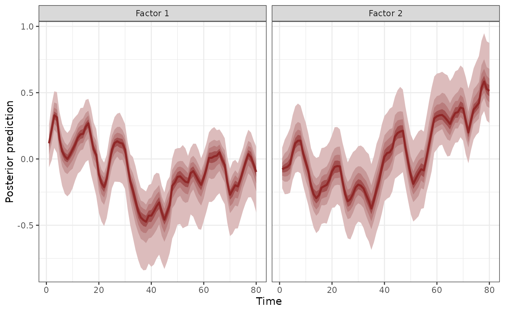
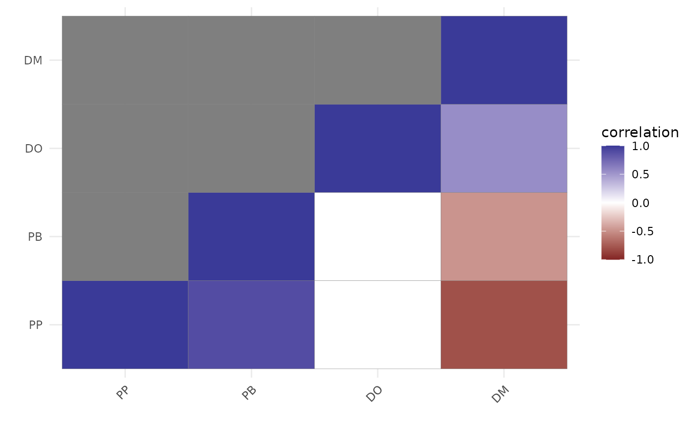

Calculate trend correlations based on latent factor loadings for mvgam models
Source:R/lv_correlations.R
lv_correlations.RdThis function uses factor loadings from a fitted dynamic factor
mvgam model to calculate temporal correlations among series' trends
Arguments
- object
listobject of classmvgamthat used latent factors, either withuse_lv = TRUEor by supplying atrend_map. Seemvgam()for details and for an example
Value
A list object containing the mean posterior correlations
and the full array of posterior correlations
Details
Although this function will still work, it is now recommended to use
residual_cor() to obtain residual correlation information in a more user-friendly
format that allows for a deeper investigation of relationships among the time series.
Examples
# \donttest{
# Fit a model that uses two AR(1) dynamic factors to model
# the temporal dynamics of the four rodent species in the portal_data
mod <- mvgam(captures ~ series,
trend_model = AR(),
use_lv = TRUE,
n_lv = 2,
data = portal_data,
chains = 2,
silent = 2)
#> Warning in '/tmp/RtmpFv6t8e/model_fd0fdfeaee023a8e623b5071c6b9ec02.stan', line 20, column 31: Found
#> int division:
#> n_lv * (n_lv - 1) / 2
#> Values will be rounded towards zero. If rounding is not desired you can
#> write
#> the division as
#> n_lv * (n_lv - 1) / 2.0
#> If rounding is intended please use the integer division operator %/%.
#> Warning in '/tmp/RtmpFv6t8e/model-23693ebc7f42.stan', line 20, column 33: Found
#> int division:
#> n_lv * (n_lv - 1) / 2
#> Values will be rounded towards zero. If rounding is not desired you can
#> write
#> the division as
#> n_lv * (n_lv - 1) / 2.0
#> If rounding is intended please use the integer division operator %/%.
# Plot the two dynamic factors
plot(mod, type = 'factors')

#> # A tibble: 2 × 2
#> Factor Contribution
#> <chr> <dbl>
#> 1 Factor 1 0.532
#> 2 Factor 2 0.468
# Calculate correlations among the series using lv_correlations()
lvcors <- lv_correlations(mod)
names(lvcors)
#> [1] "mean_correlations" "posterior_correlations"
lapply(lvcors, class)
#> $mean_correlations
#> [1] "matrix" "array"
#>
#> $posterior_correlations
#> [1] "list"
#>
# The above works, but it is now recommended to use the more
# flexible and informative residual_cor() function to
# calculate and work with these correlations
lvcors <- residual_cor(mod)
names(lvcors)
#> [1] "cor" "cor_lower" "cor_upper" "sig_cor" "cov"
#> [6] "prec" "prec_lower" "prec_upper" "sig_prec" "trace"
lvcors$cor
#> DM DO PB PP
#> DM 1.0000000 0.538926931 -0.5026149 -0.813423512
#> DO 0.5389269 1.000000000 0.4153731 0.005680965
#> PB -0.5026149 0.415373088 1.0000000 0.895825721
#> PP -0.8134235 0.005680965 0.8958257 1.000000000
# For those correlations whose credible intervals did not include
# zero, plot them as a correlation matrix (all other correlations
# are shown as zero on this plot)
plot(lvcors, cluster = TRUE)

# \dontshow{
# For R CMD check: make sure any open connections are closed afterward
closeAllConnections()
# }
# }